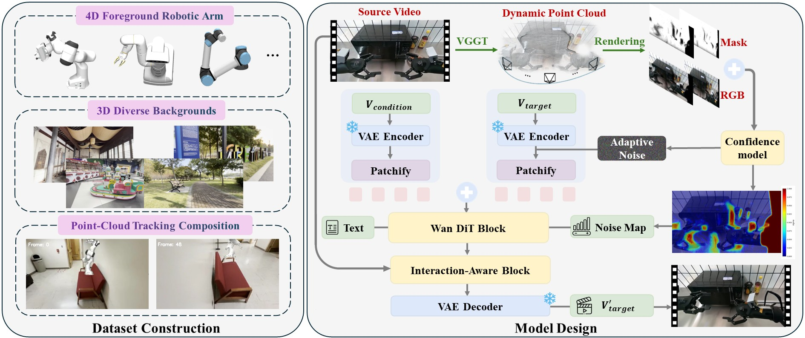
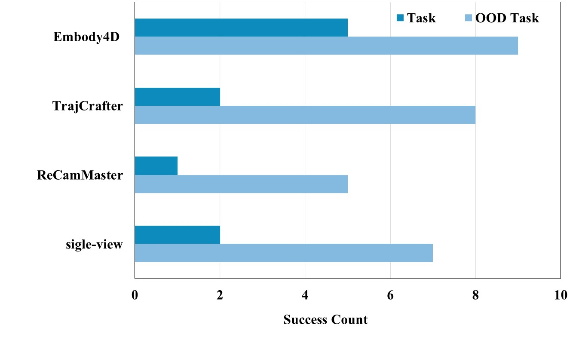
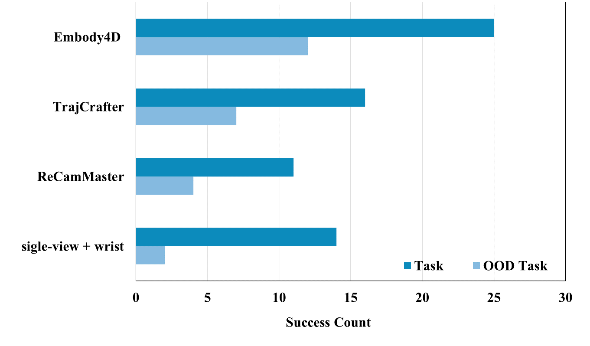

World models have made significant progress in modeling dynamic environments; however, most embodied world models are still restricted to 2D representations, lacking the comprehensive multi-view information essential for embodied spatial reasoning. Bridging this gap is non-trivial, primarily due to challenges from severe scarcity of paired multi-view data, the difficulty of maintaining spatiotemporal consistency in generated 3D geometries, and the tendency to hallucinate manipulation details. To address these challenges, we propose Embody4D, a dedicated video-to-video world model for embodied scenarios, capable of synthesizing arbitrary novel views from a monocular video. First, to tackle data scarcity, we introduce a 3D-aware compositional synthesis pipeline to curate a heterogeneous dataset compositing cross-embodiment robotic arms with diverse backgrounds, guaranteeing broad generalization. Second, to enforce geometric stability, we devise an adaptive noise injection strategy; by leveraging confidence disparities across image regions, this method selectively regularizes the diffusion process to ensure strict spatiotemporal consistency. Finally, to guarantee manipulation fidelity, we incorporate an interaction-aware attention mechanism that explicitly attends to the robotic interaction regions. Extensive experiments demonstrate that Embody4D achieves state-of-the-art performance, serving as a robust world model that synthesizes high-fidelity, view-consistent videos to empower downstream robotic planning and learning.

A AGIBOT dual-arm robotic is performing a task with a toaster.
A Franka robotic arm engaging in a sorting or retrieval task on a dark tabletop.
A Universal robotic arm performing a block-sorting task on a wooden desk.
A LIFT2 dual-arm robotic performing manipulation tasks on a light-colored tabletop.
| VBench ↑ | Q-Align ↑ | |||||
|---|---|---|---|---|---|---|
| Method | Subject | Background | Temporal | Motion | Imaging | Visual Quality |
| ReCamMaster | 0.8981 | 0.8976 | 0.9717 | 0.9841 | 0.5914 | 3.4938 |
| Ex-4D | 0.8088 | 0.8906 | 0.9213 | 0.9742 | 0.5732 | 2.8585 |
| TrajtoryCrafter | 0.9202 | 0.9388 | 0.9714 | 0.9911 | 0.6257 | 3.8954 |
| Ours | 0.9477 | 0.9408 | 0.9751 | 0.9945 | 0.6994 | 3.9970 |
 More Results Gallery
More Results Gallery
Embody4D acts as a scalable data engine for downstream robotic manipulation and planning. Leveraging its novel-view synthesis capability, the success rate of π0.5 improves dramatically from 32% to 74%, with particularly strong generalization to out-of-distribution (OOD) tasks.
| Baselines | Ours | |||
|---|---|---|---|---|
| Task | Single-view with wrist | ReCamMaster | TrajCrafter | Embody4D |
| T1 (Grapes→Bowl) | 5/10 | 4/10 | 6/10 | 8/10 |
| T2 (Grapes→Plate) | 5/10 | 5/10 | 6/10 | 8/10 |
| T3 (Mangoes→Bowl) | 4/10 | 2/10 | 4/10 | 9/10 |
| T4 (Lemons→Bowl unseen) | 1/10 | 2/10 | 0/10 | 6/10 |
| T5 (Bananas→Plate unseen) | 1/10 | 2/10 | 7/10 | 6/10 |
| Success Rate (SR) | 32% | 30% | 46% | 74% |


*Recammaster is designed for controlling the lens movement of camera external parameters, making it difficult to achieve fixed-angle generation, which leads to inconsistent parallax and a decrease in the overall results.